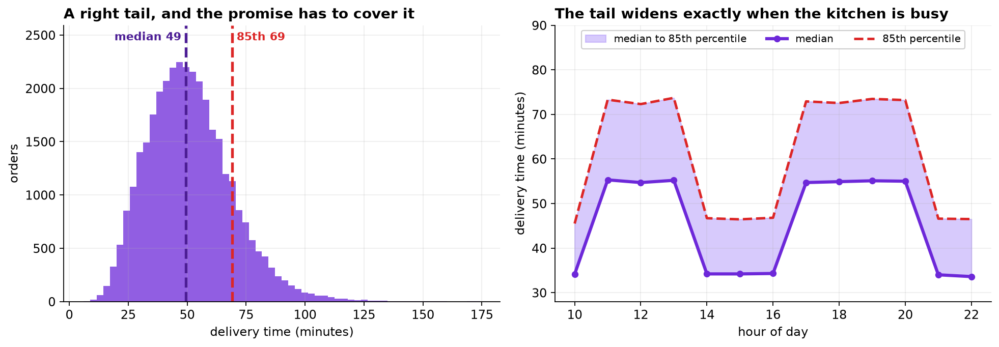

Most of the effort in a tabular modeling project goes into the model. This chapter measures what each decision was actually worth, in seconds, and the ordering is close to the reverse of the usual one.
- Setting
- Eighty-four days of food delivery orders from one city zone: 41,410 usable orders with distance, hour, items, weather, traffic, courier supply and the restaurant, plus the minutes from order placed to delivered.
- The question
- What arrival time should the app display when the order is placed? Not what the delivery will take. What number to promise.
- Why it matters
- Arriving late is roughly three times as costly as arriving early, and the service target is that no more than 15 percent of orders arrive after the displayed time. The platform currently shows the prediction plus a flat 8 minutes, and nobody remembers who chose 8.
- What we do
- Split by time, beat a linear baseline, price feature engineering against model family against hyperparameter search, read the learning curve to decide whether more data would help, find where the model is wrong, and then work out what to display.
Four engineered features removed 101 seconds of error, switching from linear regression to gradient boosting removed 17, and twenty configurations of hyperparameter search removed four. Then a conditional quantile and a flat buffer with the same average padding produced the same overall late rate and late rates that ranged over 22 points against 3 across ordinary operating conditions.
The Baseline, and a Split That Respects Time
After removing a duplicated export block, 384 cancellations recorded as a delivery time of zero and 211 orders with a GPS distance of 999 kilometers, 41,410 orders remain. Mean delivery time is 51.0 minutes with a standard deviation of 17.9.
Three windows, in time order rather than sampled at random, because the model will always be predicting orders that have not happened yet: days 0 to 69 to train (34,462 orders), 70 to 76 to choose (3,425), 77 to 83 to report (3,523). The middle window does the choosing. The last one is opened once.
The baseline is not an aspiration, it is a hurdle: a linear regression on the raw columns of the export. Every number below is measured against it.

What Each Decision Was Worth
| Features | Linear regression | Gradient boosting | What the model bought |
|---|---|---|---|
| Raw columns | 9.898 | 9.622 | 0.277 min (17 s) |
| Plus four engineered | 8.017 | 7.946 | 0.071 min (4 s) |
| What the features bought | 1.881 min | 1.676 min |
Test RMSE in minutes. Both models use default settings.
Read the bottom row against the right column. The features are worth roughly twenty-four times what the model family is worth, and a linear regression with good features beats a gradient boosting machine with poor ones by more than a minute and a half.
Then a random search over twenty hyperparameter configurations, each fitted on the training window and scored on the validation window, with the winner scored once on the test window.
Four seconds is real and it is not nothing. Set it beside the 101 seconds the fourth engineered feature was worth and the hierarchy is settled. It is also worth noticing that the configuration ranked tenth on the validation window did best on the test window: among the leaders, the search is ranking noise.
The score you selected on and the score you did not select on are different numbers. The validation figure is optimistic by however much the search exploited that window, and quoting it as the model's accuracy overstates it. The honest procedure also means deploying the validation winner rather than the configuration that happens to do best on the test set, which would be using the test set to choose.
![Left: horizontal bars showing how many minutes of test RMSE each decision removed. Four engineered features remove 1.676 minutes or 101 seconds; switching from linear regression to gradient boosting on raw columns removes 0.277 minutes or 17 seconds; the same switch on engineered columns removes 0.071 minutes or 4 seconds; twenty configurations of hyperparameter search remove 0.064 minutes or 4 seconds. Right: a learning curve on a log x-axis. The test error falls from 8.85 minutes at 1,700 orders to 7.88 at 34,000, while the training error rises from 5.2 to 7.65, and the two curves converge.](../assets/img/capstone-eta-hierarchy.png)
Engineer What the Model Cannot Derive
Four features were added: a load ratio (pending orders per available courier), a peak-hour flag, a weekend flag, and the restaurant's own recent median delivery time built from its past orders only. Drop them one at a time and refit.
| Removed | Test RMSE | Cost of removing it | Could the model have derived it? |
|---|---|---|---|
| is_weekend | 7.946 | +0.000 min | Yes, from day_of_week |
| is_peak | 7.955 | +0.009 min | Yes, from hour_of_day |
| load | 7.958 | +0.012 min | Yes, from its two components |
| rest_hist | 9.494 | +1.548 min | No, it aggregates other rows |
One feature carried essentially all of it, and the pattern is not an accident. A boosted tree can split on
orders_pending and couriers_available separately and approximate their ratio; it can
split on hour_of_day and find the lunch and dinner peaks by itself. Writing those out helps
readability and almost nothing else.
Engineer what the model cannot derive from what it already has. Ratios, flags and thresholds of existing columns are convenience. Aggregates across rows, histories, and anything joined in from outside the table are information.
A note on how that feature was built. The expanding median uses each restaurant's previous orders and stops
there. Taking a plain groupby(...).median() over the whole file would have been shorter, slightly
more accurate on this test set, and wrong, because it would use next month's orders to predict this month's.
That is the trap Chapter 191 is about, and it is easiest to fall
into exactly here, in the most valuable feature in the project.
More Data, or a Better Model?
Both cost money and they are different purchases, so it is worth answering rather than guessing. Fit on growing subsets of the training window and watch the two errors converge.
| Training orders | Error on the training data | Error on the test window | Gap |
|---|---|---|---|
| 1,723 | 5.206 | 8.848 | 3.641 |
| 3,446 | 5.988 | 8.372 | 2.384 |
| 8,615 | 6.980 | 8.109 | 1.129 |
| 17,231 | 7.479 | 8.002 | 0.523 |
| 34,462 | 7.654 | 7.882 | 0.227 |
The curves have met. The training error has risen and the test error has fallen until the gap is a quarter of a minute, and the last doubling of the data bought 0.12 minutes, about seven seconds.
More data will not help, and neither will a more flexible model. What is left is not error a model could remove with better use of these features. It is variation in the world: two identical orders from the same restaurant, the same distance, the same minute, genuinely arrive at different times.
Which changes the question the project is answering. If the uncertainty cannot be removed, it has to be communicated, and that is a different piece of work from making the model better.
Where the Model Is Wrong
An average error of 7.9 minutes is a summary. The question is whether it is the same 7.9 minutes everywhere.
| Segment | n | Average error (bias) | Spread of the error |
|---|---|---|---|
| Off peak | 993 | −0.13 | 4.65 |
| Peak hours | 2,530 | −0.07 | 8.83 |
| Load under 0.8 | 945 | −0.09 | 4.66 |
| Load above 2.0 | 335 | +0.67 | 11.52 |
| Under 2 km | 1,107 | −0.08 | 6.77 |
| Over 6 km | 394 | −0.30 | 10.35 |
| Dry | 2,780 | −0.11 | 7.47 |
| Heavy rain | 338 | +0.03 | 10.41 |
The bias is near zero everywhere and the spread is nowhere near constant. Off peak the model is good to about five minutes. When the zone has more than two pending orders per courier it is good to about twelve. A factor of two and a half, and predictable from features already in the model.
A model with this property is not broken. It is reporting something true: some orders are inherently harder to forecast than others. What would be broken is a system that shows the same kind of number for both.
![Left: a scatter of prediction errors against pending orders per available courier, with a two-standard-deviation envelope drawn on top. The envelope widens from about 4.8 minutes at the lowest load to about 11.3 at the highest, while the errors stay centered on zero throughout. Right: grouped bars of the share of orders arriving late under a flat 6.7-minute buffer and under the conditional 85th percentile, across six segments, against a dashed 15 percent service target. The flat buffer ranges from 3 percent on easy orders to 25 percent on high-load orders; the conditional version ranges from 15 to 18.](../assets/img/capstone-eta-quantile.png)
What Number to Display
The point prediction is the best guess at the middle of the distribution, so 46.5 percent of orders arrive after it. That is not a defect. It is what a conditional mean is.
With late costing three times as much as early, the quantity that minimizes expected cost is not the mean but the quantile at τ = 3 ÷ (3 + 1) = 0.75, which is the newsvendor result, and gradient boosting can be fitted directly to that loss.
| What is displayed | Arrive late | Average padding | Cost per order |
|---|---|---|---|
| The point prediction | 46.5% | 0.00 min | 11.271 |
| Point prediction + the current 8 min | 11.8% | 8.00 min | 11.080 |
| Conditional 70th percentile | 31.3% | 2.71 min | 9.808 |
| Conditional 75th percentile | 25.5% | 3.93 min | 9.638 |
| Conditional 80th percentile | 20.4% | 5.30 min | 9.667 |
| Conditional 85th percentile | 15.4% | 6.73 min | 10.099 |
| Conditional 90th percentile | 10.5% | 8.90 min | 11.169 |
Cost is three times the minutes late plus one times the minutes early, averaged over orders.
The sweep finds its minimum exactly where the theory says it should, at the 75th percentile, and costs about 13 percent less than the current flat 8-minute policy.
There is a genuine tension here to hand back rather than resolve. The 75th percentile is cost-optimal and leaves 25 percent of orders late, against a service target of 15. The 85th hits the target and costs a little more. Which one is right depends on what the service promise is worth, which is a question for the business. What an analysis can do is make sure whichever they choose is delivered well.
The Same Padding, Spent Differently
The conditional 85th percentile pads by 6.73 minutes on average. Give a flat buffer the same average padding and compare. If the model's uncertainty estimates are worth anything, the two will differ in who ends up late.
| Segment | n | Current +8 flat | Matched 6.73 flat | Conditional 85th |
|---|---|---|---|---|
| Off peak, under 3 km | 534 | 1.9% | 3.0% | 16.3% |
| Off peak, 3 km or more | 459 | 6.8% | 9.8% | 17.6% |
| Peak, under 3 km | 1,369 | 13.1% | 17.1% | 14.7% |
| Peak, 3 km or more | 1,161 | 17.0% | 20.0% | 15.1% |
| Heavy rain | 338 | 19.8% | 23.4% | 17.2% |
| Load above 2.0 | 335 | 21.8% | 25.1% | 16.4% |
| All orders | 3,523 | 11.8% | 15.0% | 15.4% |
Read the bottom row first. The two policies have almost the same overall late rate, 15.0 percent against 15.4. On the headline number they are the same product.
Now read the column above it. The flat buffer keeps its promise to 97 percent of easy orders and breaks it for a quarter of the hard ones. Its late rate ranges over 22 percentage points across these six segments; the conditional version ranges over three.
That difference is invisible in RMSE, invisible in MAE, and invisible in the overall late rate. It is the difference between a service level and an average of service levels, and it falls on the same customers every time: the ones who live further out, order at dinner time, or order when it is raining.
The current +8 policy has the same shape. Its overall figure of 11.8 percent is comfortably inside the target, and it is failing that target for 21.8 percent of the highest-load orders. The headline number is hiding it.
What to Watch
- ✓Spend the effort in proportion to what it buys. Here that was 101 seconds, 17 seconds, and 4 seconds, and the usual order of attention is close to the reverse.
- ✓Engineer what the model cannot derive. A ratio of two present columns is convenience; an aggregate over other rows is information.
- ✓Quote the test score, not the validation score. The one you selected on is optimistic by however much the search exploited it, and among the leaders the ranking is noise.
- ✓Draw the learning curve before buying more data. It answers a question people usually argue about instead.
- ✓Check the residual spread by segment, not just the residual mean. Unbiased everywhere is compatible with useless somewhere.
- ✓An average service level is not a service level. A policy can hit 15 percent overall while failing a quarter of the customers who need it most.
- ✓When the error is irreducible, communicate it. The remaining work is not a better point estimate, it is the right interval around it.
Quantiles and Cost in Data Science & AI
| Where it appears | The same question, in a different costume |
|---|---|
| Inventory and supply chain | The original newsvendor problem: stock the quantile set by the ratio of stockout cost to holding cost, not the forecast |
| Capacity and staffing | Rostering to the mean guarantees being short half the time; the target is a service level, which is a quantile |
| Project estimation | The reason a schedule slips is that every task was estimated at its mode and summed as if it were a maximum |
| Energy and load forecasting | Grid operators buy reserve against a high quantile, because the cost of being short is not the cost of being long |
| Any user-facing estimate | Arrival times, wait times, download times: the displayed number is a promise, and a promise is a quantile |
Koenker and Bassett introduced quantile regression in 1978 and the pinball loss used here is theirs. Friedman gave gradient boosting its modern form in 2001, and Meinshausen's quantile regression forests showed how to get a full conditional distribution out of an ensemble rather than a single number. The distribution-free alternative is conformal prediction, developed by Vovk, Gammerman and Shafer and extended to conditional coverage by Romano, Patterson and Candès, which produces intervals with a guaranteed marginal coverage rate without assuming anything about the error distribution. On the model-comparison question, Grinsztajn and colleagues assembled the evidence that tree ensembles still lead on tabular data, and Kadra and colleagues made the complementary point that most of the reported gains in this literature are smaller than the tuning budgets that produced them.
The full project, step by step
The companion notebook cleans three faults out of the export, splits by time, fits the linear baseline, builds and prices the four engineered features, runs the twenty-configuration search and scores it honestly, draws the learning curve, breaks the residuals down by segment, fits the quantile models, and compares a conditional quantile against a flat buffer at matched padding.
The dataset
(capstone-gradient-boosting-regression.xlsx) holds 42,520 orders across 84 days and 140
restaurants, with a duplicated export block, cancellations recorded as zero minutes, GPS failures recorded as
999 kilometers, and the agreed cost of being late. Two written reports accompany it: a
plain-language brief for the operations lead, and a technical report
covering the comparison, the search and the quantile policy.
🎓 Key Takeaways
- ✓Features 101 seconds, model family 17, hyperparameters 4. The effort usually runs in the other order.
- ✓One feature did all of it. The three the model could have derived were worth 0.02 minutes between them; the cross-row history was worth 1.55.
- ✓The learning curves met, so the remaining error is in the world rather than in the model.
- ✓The residual spread varies by a factor of two and a half across ordinary conditions, and it is predictable in advance.
- ✓Same padding, same overall late rate, 22 points of spread against 3. An average service level is not a service level.